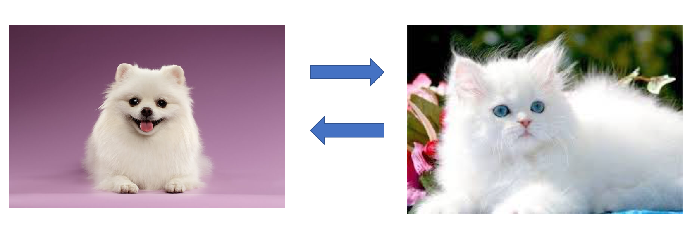
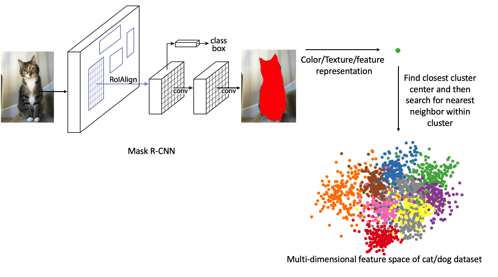
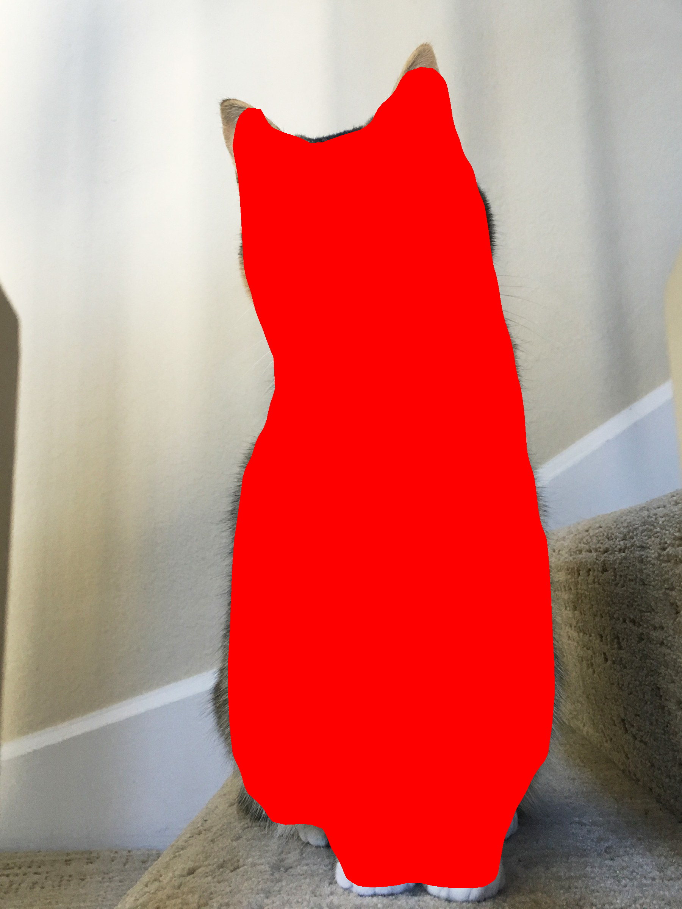

PetSwap
Hemanth Chittanuru (hchittanuru3), Kenny Scharm (kscharm3), Raghav Raj Mittal (rmittal34), Sarah Li (sli469)CS 6476 Computer Vision - Class Project
Georgia Tech, Fall 2019
The code for this project can be found in this repository.
Previous project deliverables: proposal, update 1
Abstract
The purpose of this project is to match images of dogs with images of cats (and vice versa) based on color and texture. For example, given an input image of a cat, we wish to find an image of a dog from our dataset that it most similar in terms of fur/skin color and pattern. Our architecture consists of using Mask R-CNN to segment the animal from the image, obtaining a fused feature representation of color and texture features and clustering the images based on similarity. The expected input is a real color image of a dog or a cat. The desired output is an image of the opposite animal type with the most similar fur/skin color and pattern. We evaluate multiple clustering techniques such as k-means, mean shift, and Gaussian mixture model (GMMs) to see which produces the best results.

Sample input-output pair
Sample input-output pair
Introduction
We were inspired to do this project by this article. This is an application of content-based image retrieval. We are performing image retrieval based on color and texture, which is common practice in CBIR research. Our approach differs from previous work in the juxtaposition of image segmentation and CBIR. We aim to see how well this combined approach performs. This project is an interesting and fun application of various computer vision techniques.

PetSwap Pipeline
PetSwap Pipeline
Approach
Summary
Our system contains three distinct components: animal image segmentation, color/texture representation, and clustering. With these three steps we are able to take any input image of a dog or a cat and output an image with the most similar color and texture. We can simply query our pre-trained clusters with the color/texture representation of the image and return the closest image. We test various clustering techniques to see which one performs the best.Animal Image Segmentation
We use Mask R-CNN to segment the animal out of the image. This model has already been pre-trained on the COCO dataset, which contains color images and segmentation masks of dogs and cats (among many other objects). We used this Mask R-CNN model to segment the animals out of our two datasets (see Datasets subsection under Experiments and Results). The next step is to feed the segmented animals into our texture/color histogram generator and map each feature representation to the image using a dictionary.Color/Texture Representation
Once we produce the segmented animal image, we extract color and texture features. We use this color/texture combination to generate a 24-dimensional feature representation. First, we find the mean and standard deviation of the red, green and blue channels of the image. Second, we convert the image's color space to YCbCr and compute the mean and standard deviation across the channels to obtain another feature. Lastly, we calculate a histogram of the HSV color space. For the texture features, we use a Gray Level co-occurence matrix, which is characterization of the texture of the image. Using this matrix, we extract statistical measures to use as features.Clustering
We cluster images of dogs and cats together by feature vector similarity, where each data point has a dog or cat label. Once we cluster our training data from the dog and cat datasets, we evaluate the performance by testing it with our test sets (see Datasets subsection). When there is a query to our system, we first predict the closest cluster center. Once we are within the cluster, we then select the closest feature vector. Doing so will reduce the time complexity of the algorithm, as it removes the need to compare the query feature vector with that of every image in the dataset to find the closest match. The closest image of the opposite animal type is then returned to the user. We qualitatively evaluated three different clustering techniques--namely k-means, mean shift, and GMM--by testing multiple images of both animal types (see Experiments and Results).Experiments and Results
Experimental Setup
Datasets
We use two main datasets--one containing images of cats and the other containing images of dogs. The Cat Dataset includes 10,000 cat images and the Stanford Dogs Dataset includes over 20,000 images of dogs, classified by breed. Before using these datasets to train our clusters, we first pre-processed the data. This involved extracting images from the dog and cat datasets, while also ignoring other metadata files. The dog dataset was manually shuffled so that the images were no longer separated by breed. We divided each animal dataset into a 90% "training" and 10% testing split. In this case, the training data is the pre-clustered images. The data is now prepared for the Experimental Setup.As a side note, we use a pre-trained Mask R-CNN model for image segmentation. This is trained on the COCO dataset.
Existing Code
We rely heavily on the following python libraries: scikit-image and OpenCV. Clustering algorithms: In addition to these libraries, we use code from several GitHub repositories:Implementation Details
We implemented the pipeline to solve the problem end-to-end. Specifically, we created a useful feature representation that captures the key color and texture information about the images.Defining Success
Quantitatively, we define success for the project to be the elbow of the k vs SSE curve and having a distance of 10% (of the mean distance) between input and output images. We also qualitatively evaluate how close the dogs and cats look by have multiple people use our system and provide feedback.Hypertuning
Experiments
Mask R-CNN
We hypothesized that Mask R-CNN would be accurate when segmenting dog and cat images from the other datasets. Since the Mask R-CNN model was pre-trained on COCO, it was effective in accurately segmenting out cat and dog images. Using the demo code from the original author of Mask R-CNN, we were able to successfully segment out objects in custom images. We processed the output futher to remove bounding boxes and segmentation masks that did not correspond to the dog and cat classes. We then extract pixels corresponing to the remaining masks, and use these pixel values to compute a feature representation of the object. One major drawback of Mask R-CNN is the compute power and processing time it requires to segment images. The GPU we used simply could not handle Tensorflow models with 10,000+ images without running out of memory. For this reason, we used a subset of the dog and cat data. We ended up clustering roughly 8,800 images, where half were dog images and half were cat images.Foreground Feature Representation
We have implemented various feature extractors based on color and texture, and have experimented with which combination of those feature extractors provide the best clustering result.Distance Function
When determining the similarity of two images, there are a number of distance metrics that could be used. With our feature representation, Euclidean distance is the best option. The results are shown in the next section.Clustering Algorithm
First, we need to decide whether we would cluster the dogs and cats separately or all together.Next, we would experiment with the clustering methods. We can try both hard and soft clustering. Hard clustering assigns each point to a cluster definitively, soft clustering uses a probabilistic approach to assign probabilities of belonging to each cluster for each point. Both could provide interesting results in this project since we expect hard clustering to give cleaner results faster but soft clustering to perhaps find some insights missing from hard clustering.
Another detail would be what hard clustering algorithm we would utilize. We would decide between centroid-based and density-based, i.e. mean clustering vs. mode clustering. We would figure out these two details by comparing the accuracy of each implementation.
Additionally, we can try varying the value of k in hard clustering. This is key to finding meaningful groups in the dataset. If the clusters are too small, similar images may not be grouped together. On the other, clusters that are too large will group dissimilar images together. We would decide this using the elbow method, trying to find the optimal value of k.
Results
Using the Mask R-CNN implementation, and updating it to detect cats and dogs only, we can produce the following succesful segmentation:
Input to Mask R-CNN

Output of Mask R-CNN
Output of Mask R-CNN
Here are the results of our proposed system given several input images using different clustering techniques:

Example 1

Example 2

Example 3

Example 4